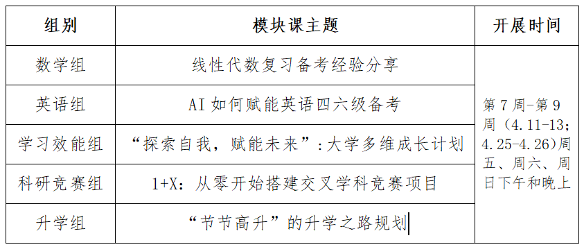

学院通知 · 考试安排
关于面向学院开展“大川小思”朋辈团体学业辅导的通知（2024-2025学年春季学期）
发布时间：2025-03-21
各学院 （ 系） ： 为做好本科生学业指导工作，学工部本学期将继续以学院为单位开展朋辈团体学业辅导活动，帮助学生解决普遍性的学业重难点问题。现公开征集参与学院，具体事项通知如下： 一 、 “大川小思”团体 学业 辅导课介绍 在梳理总结过往团体辅导数据的基础上， “大川小思”凝练出不同时间点、不同年级学生的学业重难点，针对性制作出团体学业辅导课，供学院选择参与。 团体学业辅导课由 “大川小思”五个辅导小组（学习效能组、英语组、数学组、竞赛科研组、升学组）制作的相应主题模块课组成。每门模块课讲授时间约20分钟，交流答疑约5-10分钟。学院一次可预约2-3个模块，预计用时1-2个课时。 本学期开展时间为 第 7 周 -第 9 周 ，期中考试期间暂停。一周拟开展 3 个学院 ， 共 征集 6个学院 参与 。具体模块课程如下： 二、参与方式 请有意向参与的学院，在 “大川小思”课程模块中选择主题及时间段，并填写《“大川小思”学院朋辈团体学业辅导意向信息表》（附件1），尽快发送至学工部学生发展辅导中心邮箱xgb-fzzx@scu.edu.cn。学工部将根据 《信息表》收件时间的先后顺序 ，确定参与学院，并结合学院意愿和“大川小思”朋辈小导师情况，与学院商议确定团体辅导的具体实施方案。 也欢迎同学们积极参加 “大川小思”其他学业辅导项目（附件2），特别推荐“小思答疑坊”一对一辅导（附件3）。 联系人：朱老师 电话： 8546 1977 附件 ： 1. “大川小思”学院朋辈团体学业辅导 意向信息表 2. “大川小思”朋辈学业指导项目 3. “小思 答疑坊 ” 海报 党委 学生工作部 202 5 年 3 月 24 日
